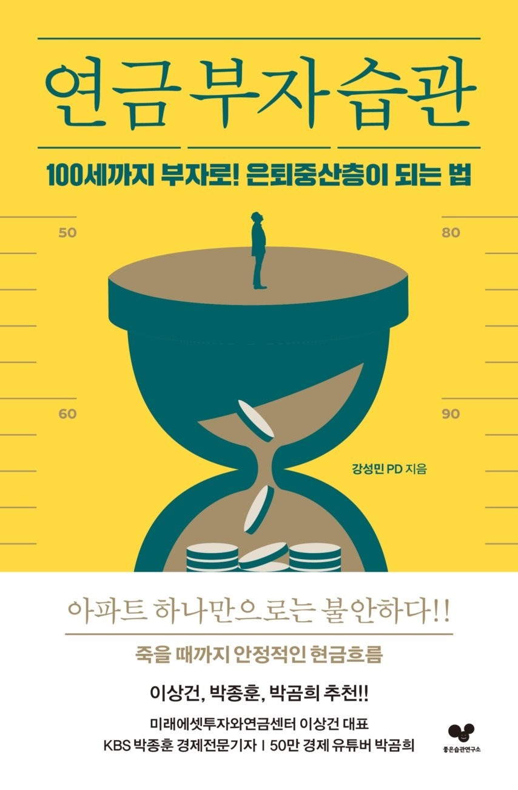

100세까지 부자!! 은퇴중산층이 되는 습관, 연금 부자가 되는 습관 쉽다! 몇 가지 조정과 변경만으로도 몇 년 뒤 연금 수령액을 달리할 수 있다.
미래에셋 투자와연금센터 이상건 대표 추천!! KBS 박종훈 경제전문기자 추천!! 금융 유튜버 박곰희 추천!!
연금은 현금흐름으로 대표되는 재무적 연금과 정서적 관계와 튼튼한 근육으로 대표되는 비재무적 연금이 있다. 작가는 연금 생활을 하던 아버지를 보면서 재무적/비재무적 연금의 균형과 중요성을 파악했다. KBS PD로 관련 프로그램을 제작하며 연금 고수들로부터 고급 정보를 얻는다. 이를 바탕으로 본인의 은퇴 설계에 직접 적용해보며 그간의 경험과 지식을 모아 이 책을 집필했다.
top ↑
1부. 재무적 연금 습관
1. 연금을 주기적으로 점검하는 습관
- 우리가 쌓아야 할 5층 연금탑을 확인하고, 나는 지금 몇 층까지 준비되었는지 확인한다.
2. 적립식 투자로 연금을 키우는 습관
- 내가 갖고 있는 연금 종류를 확인하고 투자 상품으로 연금 수익률을 관리한다.
3. 보험계약 내용을 확인하는 습관
- 보험계약은 자세히 알면 알수록 돈이 된다. 약관 보장 내용을 한 번 더 확인하고, 향후 연금수령액도 확인한다.
4. 우아하게 가난해지는 습관
- 지출 수준을 어떻게 조금씩 낮출 수 있는지 알아보고, 그동안의 생활 패턴도 점검한다.
5. 제2의 직업을 준비하는 습관
- 평생 일하는 게 행복이다. 제2의 인생을 풍요롭게 해줄 다음 일을 생각해본다.
6. 새로운 소득원을 개발하는 습관
- 파이프라인은 다다익선! 파이프라인 하나 더 만들기, 지금부터도 늦지 않았다.
7. 세금에 대해 공부하는 습관
- 종합소득세를 알아보고, 퇴직 소득과 양도 소득의 절세법을 확인한다.
8. 상속 디자인을 하는 습관
- 상속과 증여의 시기를 파악하고, 부모님을 대신해 유언 제도도 알아둔다.
9. 복지 제도를 알아보는 습관
- 매년 바뀌는 복지 정보 놓치지 않도록 실시간 업데이트 받는 방법을 알아본다.
10. 주거에 대해 생각해보는 습관
- 배우자도 함께 만족할 수 있는 미래 주거지를 미리 알아보고 준비한다.
top ↑
KBS 라디오 PD 겸 공인회계사 1994년 클래식 음악 PD로 KBS에 입사했다. 20대 때부터 시작한 재테크 경험으로 경제에 일찍 눈 뜨면서 30대 중반부터 클래식과 함께 경제, 시사 프로그램도 담당했다. 이때 자신의 부족한 지식을 메우고자 공인회계사(CPA) 자격증을 취득한다. 그리고 연금 생활을 하시던 아버지를 보면서 건강한 노후를 위해서는 돈(연금)과 관계(정서연금) 건강(근육연금)을 잘 갖추는 것이 필요하다는 것을 깨닫는다. 남들보다 조금 빠르게 은퇴와 연금에 대해 관심을 갖게 된다.
2019년 팟캐스트는 <강PD의 똘똘한 은퇴설계>를 기획하고 직접 진행했다. 연금, 투자, 보험, 건강 등 각 분야의 전문가들로부터 인생 후반전을 행복하게 살 수 있는 지혜를 배웠다. 이때 따로 시간을 내어 은퇴설계전문가(ARPS)과정도 함께 공부한다. 이렇게 습득한 내용은 작가의 경험과 결부되어 은퇴설계 칼럼으로 사내 게시판에 연재하는 밑바탕이 된다. 작가는 KBS 직원들만 보던 내용을 다른 사람들과 공유하고 싶어 이책을 썼다.
연세대학교에서 화학과를 졸업하고, 같은 대학에서 음악이론으로 석박사를 수료했다. 라디오 <노래의 날개위에> <뉴스와이드>, <경제투데이> 등 여러 프로그램을 제작했고, 방송통신심의위원회의 <이달의좋은프로그램상>, 한국PD연합회의 <한국PD대상> 등 다수의 방송상을 수상했다. 현재는 KBS 1라디오에서 <라디오매거진 위크앤드>와 를 제작하고 있다.
top ↑